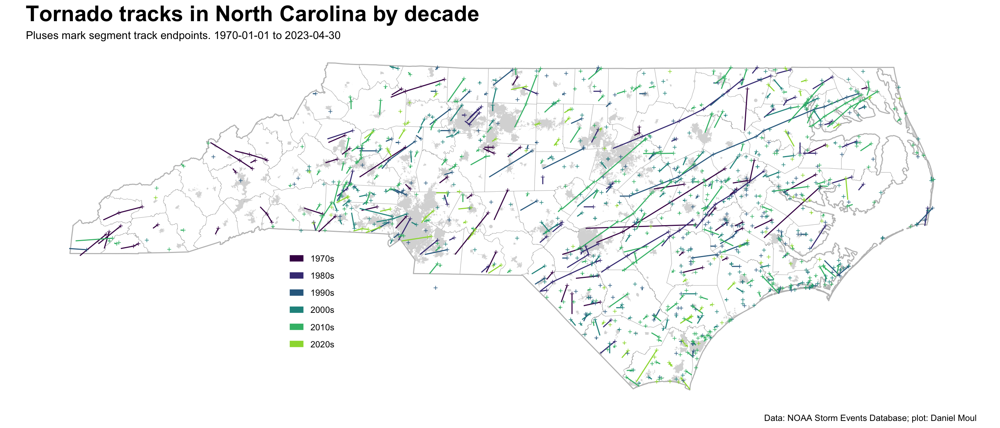
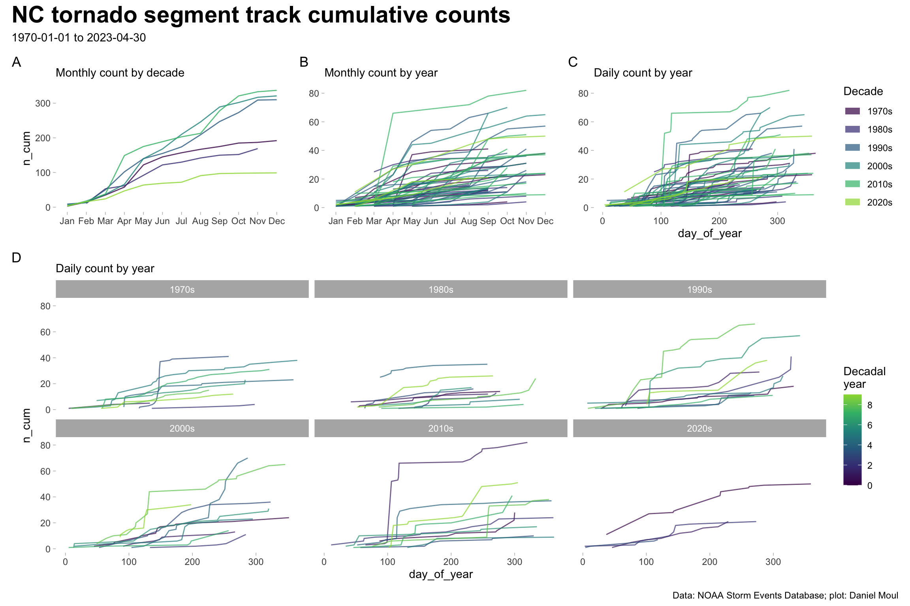
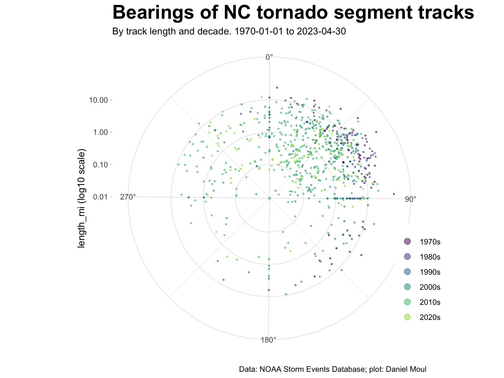
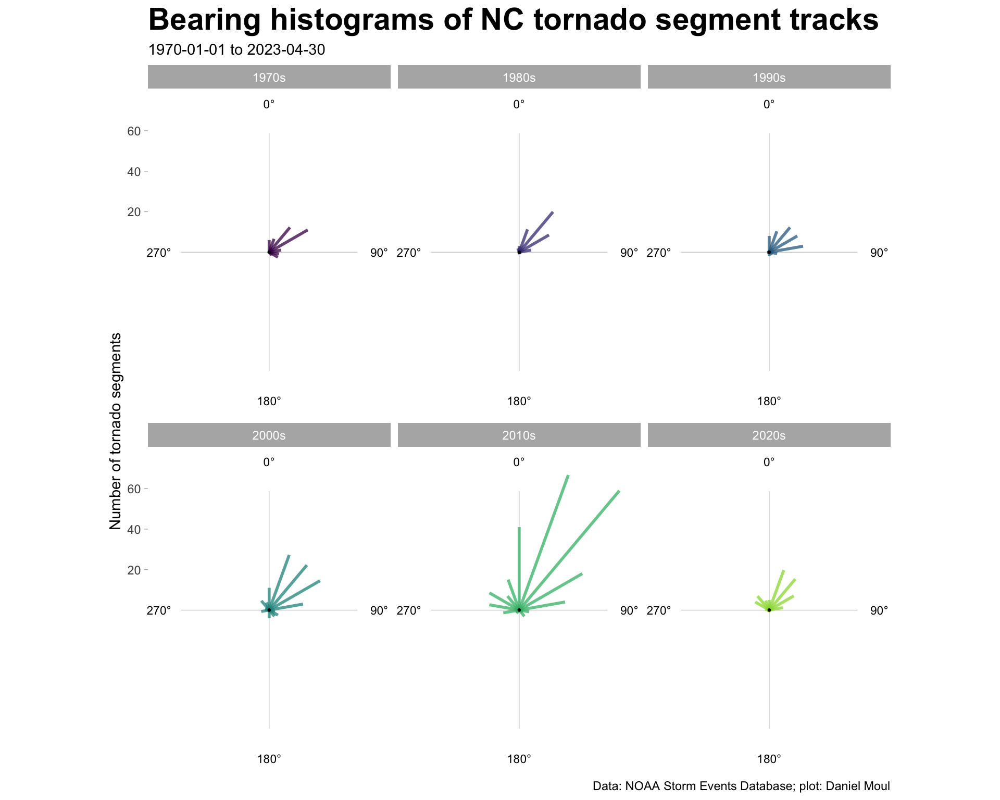
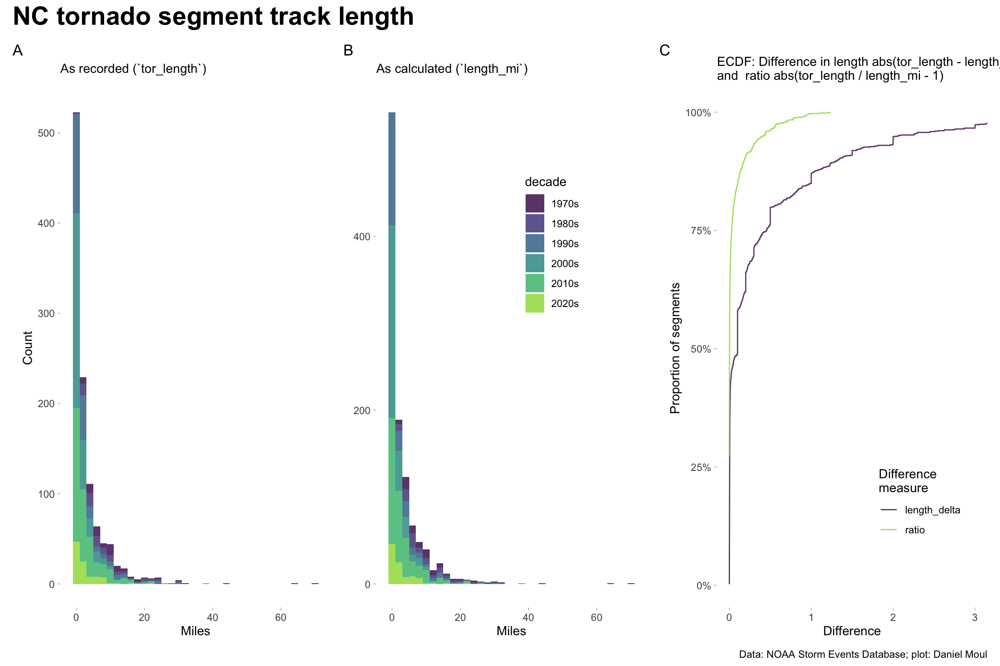
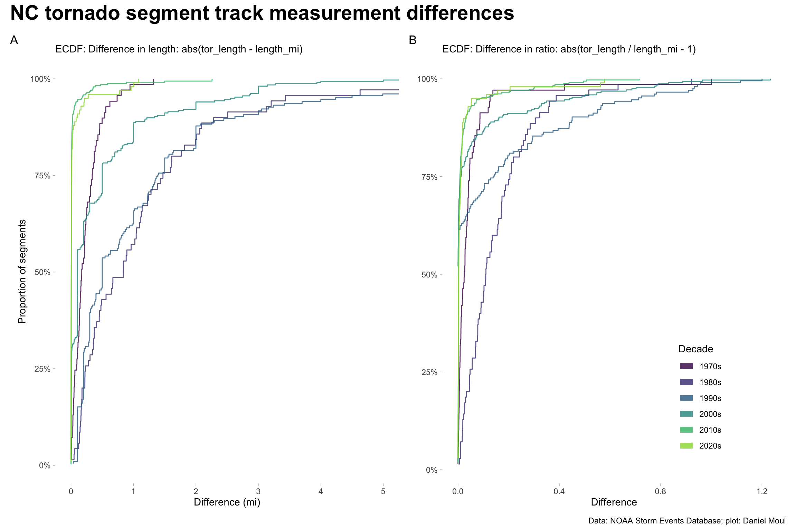
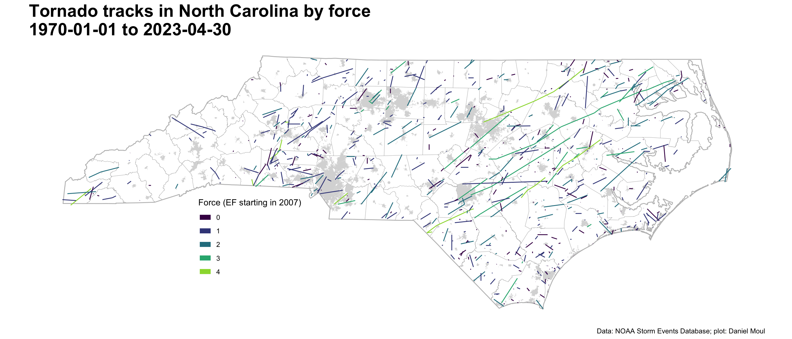
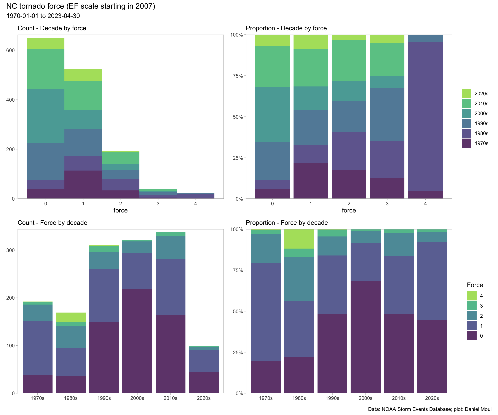
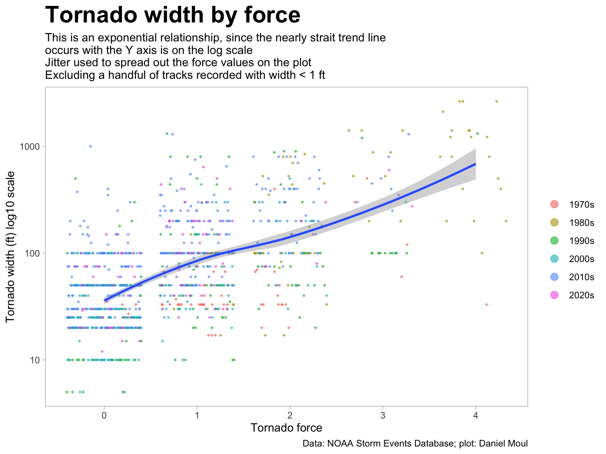
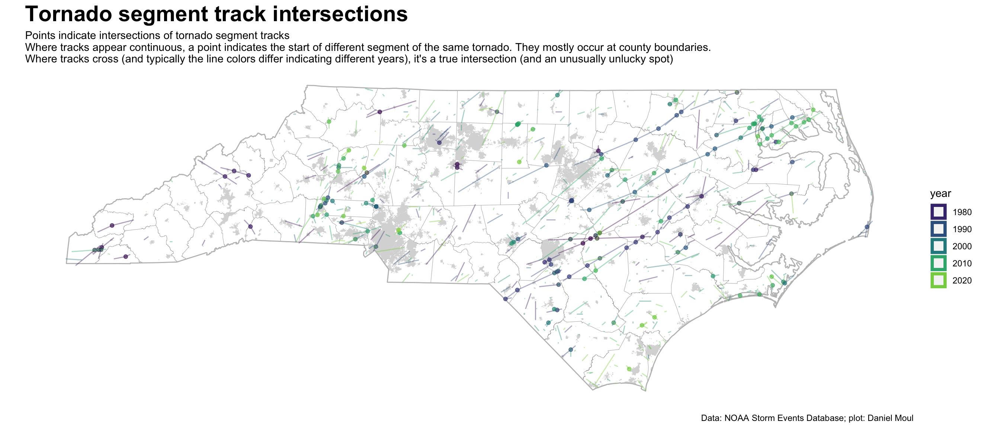

Show the code
source("./setup-and-data-prep.R")source("./setup-and-data-prep.R")Tornadoes are not uncommon in North Carolina. They vary in where they appear, the direction they move, how long they touch the ground, their intensity, the width of their tracks on the ground, and the amount of damage they do to property and people.
ggplot() +
geom_sf(data = nc_counties,
fill = NA, linewidth = 0.05) +
geom_sf(data = nc_cities,
fill = "grey85", color = NA) +
geom_sf(data = nc_state,
fill = NA, linewidth = 0.5,
color = "grey") +
geom_sf(data = dta,
aes(color = decade)) +
geom_sf(data = dta_endpoints,
aes(color = decade),
size = 1, alpha = 0.8, shape = 3
) +
scale_color_viridis_d(end = 0.85) +
theme(panel.background = element_blank(),
panel.border = element_blank(),
panel.grid = element_blank(),
axis.text = element_blank(),
axis.ticks = element_blank(),
plot.title = element_text(size = rel(2.0), face = "bold"),
legend.position = c(0.3, 0.3)) +
guides(color = guide_legend(override.aes = list(linewidth = 3))) +
labs(
title = "Tornado tracks in North Carolina by decade",
subtitle = "Pluses mark segment track endpoints. 1970-01-01 to 2023-04-30",
caption = my_caption,
color = NULL
)
While tornadoes can occur at any time of the year, they are more common in spring and early autumn (the latter being hurricane season). As seen in Figure 1.2 there were noticeably fewer tornado segments recorded in the 1970s and 1980s (panel A). Beginning in the mid-1990s the NWS made major improvements in counting them (panel D).
data_for_plot <- dta_non_mapping |>
arrange(decade, day_of_year) |>
select(event_id, episode_id, begin_datetime, day_of_year, year, decade) |>
mutate(month = month(begin_datetime, label = TRUE, abbr = TRUE),
tmp = 1)
p1 <- data_for_plot |>
reframe(n_segments = sum(tmp),
.by = c(decade, month)
) |>
mutate(n_cum = cumsum(n_segments),
.by = decade) |>
ggplot() +
geom_line(aes(`month`, n_cum, color = decade, group = decade),
alpha = 0.8,
show.legend = FALSE) +
scale_color_viridis_d(end = 0.85) +
theme(panel.border = element_blank(),
panel.grid = element_blank(),
plot.title = element_text(size = rel(2.0), face = "bold"),
# legend.position = c(0.75, 0.2)
) +
guides(color = guide_legend(override.aes = list(linewidth = 3))) +
labs(
subtitle = "Monthly count by decade",
x = NULL,
tag = "A"
)
p2 <- data_for_plot |>
reframe(n_segments = sum(tmp),
.by = c(decade, year, month)
) |>
mutate(n_cum = cumsum(n_segments),
.by = year) |>
ggplot() +
geom_line(aes(month, n_cum, color = decade, group = year),
alpha = 0.7, linewidth = 0.5,
show.legend = FALSE) +
scale_color_viridis_d(end = 0.85) +
theme(panel.border = element_blank(),
panel.grid = element_blank(),
plot.title = element_text(size = rel(2.0), face = "bold"),
# legend.position = c(0.75, 0.2)
) +
guides(color = guide_legend(override.aes = list(linewidth = 3))) +
labs(
subtitle = "Monthly count by year",
x = NULL,
y = NULL,
tag = "B"
)
p3 <- data_for_plot |>
reframe(n_segments = sum(tmp),
.by = c(decade, year, day_of_year)
) |>
mutate(n_cum = cumsum(n_segments),
.by = year) |>
ggplot() +
geom_line(aes(day_of_year, n_cum, color = decade, group = year),
alpha = 0.7, linewidth = 0.5,
show.legend = TRUE) +
scale_color_viridis_d(end = 0.85) +
theme(panel.border = element_blank(),
panel.grid = element_blank(),
plot.title = element_text(size = rel(2.0), face = "bold"),
# legend.position = c(0.75, 0.2)
) +
guides(color = guide_legend(override.aes = list(linewidth = 3))) +
labs(
subtitle = "Daily count by year",
y = NULL,
tag = "C",
color = "Decade"
)
p4 <- data_for_plot |>
reframe(n_segments = sum(tmp),
.by = c(decade, year, day_of_year)
) |>
mutate(n_cum = cumsum(n_segments),
.by = year) |>
mutate(year = year - floor(year / 10) * 10) |>
ggplot() +
geom_line(aes(day_of_year, n_cum, color = year, group = year),
alpha = 0.7, linewidth = 0.5,
show.legend = TRUE) +
scale_color_viridis_c(end = 0.85,
breaks = c(0, 2, 4, 6, 8)) +
facet_wrap(~decade) +
theme(panel.border = element_blank(),
panel.grid = element_blank(),
plot.title = element_text(size = rel(2.0), face = "bold"),
#legend.position = c(0.75, 0.2)
) +
labs(
subtitle = "Daily count by year",
tag = "D",
color = "Decadal\nyear"
)
(p1 + p2 + p3 + plot_layout(guides = "collect")) / p4 +
plot_layout(heights = c(1, 2)) +
plot_annotation(title = "NC tornado segment track cumulative counts",
subtitle = "1970-01-01 to 2023-04-30",
caption = my_caption,
theme = theme(plot.title = element_text(size = rel(2.0), face = "bold"))
)
Most tracks in North Carolina follow the prevailing winds moving from the SW to the NE, especially east of the Appalachian mountains. Figure 1.3 plots the bearing and length of each segment with non-zero length.
data_for_plot <- dta |>
st_drop_geometry() |>
mutate(length_mi = as.numeric(length_mi)) |>
filter(length_mi > 0)
data_for_plot |>
ggplot() +
geom_point(aes(bear, length_mi, color = decade, size = tor_f_scale),
alpha = 0.5, size = 0.5,
show.legend = TRUE) +
scale_x_continuous(breaks = c(0, 90, 180, 270),
labels = c("0°", "90°", "180°", "270°")) +
scale_y_continuous(trans = "log10") +
scale_color_viridis_d(end = 0.85,
direction = 1) +
coord_polar(theta = "x") +
theme(panel.border = element_blank(),
axis.line = element_blank(),
plot.title = element_text(size = rel(2.0), face = "bold"),
legend.position = c(0.98, 0.25)
) +
guides(color = guide_legend(override.aes = list(size = 3))) +
labs(
title = "Bearings of NC tornado segment tracks",
subtitle = "By track length and decade. 1970-01-01 to 2023-04-30",
x = NULL,
y = "length_mi (log10 scale)",
color = NULL,
caption = my_caption
)
Histograms make this pattern clearer:
half_width <- 9.5
data_for_plot <- dta |>
st_drop_geometry() |>
filter(!is.na(bear),
!is.null(bear)) |>
mutate(length_mi = log2(as.numeric(length_mi)), # rescaling for better plot
# sin/cos swapped b/c Bearing is clockwise from top per https://stackoverflow.com/questions/70014534/r-create-vector-graph-with-bearing-and-distance
bin = floor(bear / 20) * 20,
bin = if_else(bin < 0, bin + 360, bin)
) |>
count(bin, decade) |>
mutate(x = n * sin(bin * pi / 180),
y = n * cos(bin * pi / 180)
)
max_x = 1.1 * max(data_for_plot$x, na.rm = TRUE)
max_y = 1.1 * max(data_for_plot$y, na.rm = TRUE)
data_for_breaks <- tribble(
~x, ~y, ~bearing,
0, max_y, "0°",
max_x, 0, "90°",
0, -max_y, "180°",
-max_x, 0, "270°",
)
data_for_origins <- data_for_plot |>
distinct(decade) |>
mutate(x = 0,
y = 0)
data_for_plot |>
ggplot() +
geom_segment(data = data_for_breaks,
aes(x = 0, xend = 0.8 * x, y = 0, yend = 0.8 * y),
alpha = 0.4, linewidth = 0.15) +
geom_text(data = data_for_breaks,
aes(x, y, label = bearing),
size = 3) +
geom_segment(aes(x = 0, y = 0, xend = x, yend = y, color = decade, ),
alpha = 0.75, linewidth = 1,
show.legend = FALSE) +
geom_point(data = data_for_origins,
aes(x, y),
size = 0.5) +
scale_y_continuous(breaks = c(20, 40, 60)) +
scale_x_continuous(breaks = NULL) +
scale_color_viridis_d(end = 0.85,
direction = 1) +
coord_fixed(clip = "off") +
facet_wrap(~decade) +
theme(panel.border = element_blank(),
panel.grid.major = element_blank(),
panel.grid.minor = element_blank(),
plot.title = element_text(size = rel(2.0), face = "bold")
) +
labs(
title = "Bearing histograms of NC tornado segment tracks",
subtitle = "1970-01-01 to 2023-04-30",
x = NULL,
y = "Number of tornado segments",
caption = my_caption
)
Storm Event Database records for each tornado segment include start and end coordinates and the length of the segment (tor_length). In addition I calculated the segment lengths from the coordinates (length_mi). There are many more short tornado tracks than long ones. The two methods provide similar results: only a few differ in length by more than the length of the segment (ratio difference > 1 in panel C).
p1 <- dta |>
st_drop_geometry() |>
select(event_id, episode_id, tor_length, length_mi, year, decade) |>
ggplot() +
geom_histogram(aes(tor_length, fill = decade), binwidth = 2,
alpha = 0.8,
show.legend = FALSE) +
scale_fill_viridis_d(end = 0.85) +
theme(panel.border = element_blank(),
panel.grid = element_blank(),
plot.title = element_text(size = rel(2.0), face = "bold"),
legend.position = c(0.65, 0.7)
) +
labs(
subtitle = "As recorded (`tor_length`)",
x = "Miles",
y = "Count",
tag = "A"
)
p2 <- dta |>
st_drop_geometry() |>
select(event_id, episode_id, tor_length, length_mi, year, decade) |>
mutate(length_mi = drop_units(length_mi)) |>
ggplot() +
geom_histogram(aes(length_mi, fill = decade), binwidth = 2,
alpha = 0.8,
show.legend = TRUE) +
scale_fill_viridis_d(end = 0.85) +
theme(panel.border = element_blank(),
panel.grid = element_blank(),
plot.title = element_text(size = rel(2.0), face = "bold"),
legend.position = c(0.65, 0.7)
) +
labs(
subtitle = "As calculated (`length_mi`)",
x = "Miles",
y = NULL,
tag = "B"
)
p3 <- dta |>
st_drop_geometry() |>
select(event_id, episode_id, tor_length, length_mi, year, decade) |>
mutate(length_mi = drop_units(length_mi),
length_delta = abs(tor_length - length_mi),
ratio = if_else(length_mi > 0,
abs(tor_length / length_mi - 1),
0)
) |>
pivot_longer(cols = c(length_delta, ratio),
names_to = "difference_measure",
values_to = "value") |>
ggplot() +
stat_ecdf(aes(value, color = difference_measure),
alpha = 0.8,
pad = FALSE,
show.legend = TRUE) +
scale_color_viridis_d(end = 0.85) +
scale_y_continuous(labels = label_percent()) +
coord_cartesian(xlim = c(NA, 3)) +
theme(panel.border = element_blank(),
panel.grid = element_blank(),
plot.title = element_text(size = rel(2.0), face = "bold"),
legend.position = c(0.75, 0.2)
) +
labs(
subtitle = "ECDF: Difference in length abs(tor_length - length_mi)\nand ratio abs(tor_length / length_mi - 1)",
x = "Difference",
y = "Proportion of segments",
color = "Difference\nmeasure",
tag = "C"
)
p1 + p2 + p3 +
plot_annotation(title = "NC tornado segment track length",
caption = my_caption,
theme = theme(plot.title = element_text(size = rel(2.0), face = "bold"))
)
Most differences occurred in the early and middle decades.
p1 <- dta |>
st_drop_geometry() |>
select(event_id, episode_id, tor_length, length_mi, year, decade) |>
mutate(length_mi = drop_units(length_mi),
length_delta = abs(tor_length - length_mi),
ratio = if_else(length_mi > 0,
tor_length / length_mi,
0)
) |>
ggplot() +
stat_ecdf(aes(length_delta, color = decade),
alpha = 0.8,
pad = FALSE,
show.legend = FALSE) +
scale_color_viridis_d(end = 0.85) +
scale_y_continuous(labels = label_percent()) +
coord_cartesian(xlim = c(NA, 5)) +
theme(panel.border = element_blank(),
panel.grid = element_blank(),
plot.title = element_text(size = rel(2.0), face = "bold"),
legend.position = c(0.75, 0.2)
) +
guides(color = guide_legend(override.aes = list(linewidth = 3))) +
labs(
subtitle = "ECDF: Difference in length: abs(tor_length - length_mi)",
x = "Difference (mi)",
y = "Proportion of segments",
color = "Decade",
tag = "A"
)
p2 <- dta |>
st_drop_geometry() |>
select(event_id, episode_id, tor_length, length_mi, year, decade) |>
mutate(length_mi = drop_units(length_mi),
length_delta = abs(tor_length - length_mi),
ratio = if_else(length_mi > 0,
abs(tor_length / length_mi - 1),
0)
) |>
ggplot() +
stat_ecdf(aes(ratio, color = decade),
alpha = 0.8,
pad = FALSE,
show.legend = TRUE) +
scale_color_viridis_d(end = 0.85) +
scale_y_continuous(labels = label_percent()) +
#coord_cartesian(xlim = c(NA, 3)) +
theme(panel.border = element_blank(),
panel.grid = element_blank(),
plot.title = element_text(size = rel(2.0), face = "bold"),
legend.position = c(0.75, 0.2)
) +
guides(color = guide_legend(override.aes = list(linewidth = 3))) +
labs(
subtitle = "ECDF: Difference in ratio: abs(tor_length / length_mi - 1)",
x = "Difference",
y = NULL,
color = "Decade",
tag = "B"
)
p1 + p2 +
plot_annotation(title = "NC tornado segment track measurement differences",
caption = my_caption,
theme = theme(plot.title = element_text(size = rel(2.0), face = "bold"))
)
The force of tornadoes are measured on the Enhanced Fujita Scale since 2007, and on the Fujita scale prior to that. From the documentation explaining the tor_f_scale data column1:
Enhanced Fujita Scale describes the strength of the tornado based on
the amount and type of damage caused by the tornado. The F-scale of
damage will vary in the destruction area; therefore, the highest value
of the F-scale is recorded for each event.
EF0 – Light Damage (40 – 72 mph)
EF1 – Moderate Damage (73 – 112 mph)
EF2 – Significant damage (113 – 157 mph)
EF3 – Severe Damage (158 – 206 mph)
EF4 – Devastating Damage (207 – 260 mph)
EF5 – Incredible Damage (261 – 318 mph)There are many more weak tornadoes than very strong ones.
ggplot() +
geom_sf(data = nc_counties,
fill = NA, linewidth = 0.05) +
geom_sf(data = nc_cities,
fill = "grey85", color = NA) +
geom_sf(data = nc_state,
fill = NA, linewidth = 0.5,
color = "grey") +
geom_sf(data = dta |>
mutate(tor_f_scale = ordered(factor(tor_f_scale))),
aes(color = tor_f_scale)) +
scale_color_viridis_d(end = 0.85) +
theme(panel.background = element_blank(),
panel.border = element_blank(),
panel.grid = element_blank(),
axis.text = element_blank(),
axis.ticks = element_blank(),
plot.title = element_text(size = rel(2.0), face = "bold"),
legend.position = c(0.3, 0.3)) +
guides(color = guide_legend(override.aes = list(linewidth = 3))) +
labs(
title = "Tornado tracks in North Carolina by force\n1970-01-01 to 2023-04-30",
caption = my_caption,
color = "Force (EF starting in 2007)"
)
Considering Figure 1.8:
It seems unlikely that 90% (all but two) of the force 4 tornadoes occurred in the 1980s. The EF scale became operational in 20072 and includes 28 defined damage indicators used to estimate wind speed, so perhaps earlier F4 tornadoes might be rated lower on the EF scale if they occurred today.
There was a noticeable increase in F0 observations starting in the 1990s. For a closer look at this dynamic see Figure 4.1 and Figure 4.2.
p1 <- dta_non_mapping |>
mutate(decade = fct_rev(decade)) |>
ggplot(aes(tor_f_scale, fill = decade)) +
geom_histogram(binwidth = 1,
alpha = 0.8,
show.legend = FALSE) +
scale_fill_viridis_d(end = 0.85, direction = -1) +
scale_y_continuous(expand = expansion(mult = c(0, 0.02))) +
theme(panel.grid = element_blank(),
plot.title = element_text(size = rel(2.0), face = "bold")) +
labs(
subtitle = "Count - Decade by force",
x = "force",
y = NULL,
fill = NULL
)
p2 <- dta_non_mapping |>
ggplot(aes(tor_f_scale, fill = decade)) +
geom_bar(position = position_fill(reverse = TRUE),
alpha = 0.8) +
scale_y_continuous(labels = label_percent(),
expand = expansion(mult = c(0, 0))) +
scale_fill_viridis_d(end = 0.85, guide = guide_legend(reverse = TRUE)) +
theme(panel.grid = element_blank(),
plot.title = element_text(size = rel(2.0), face = "bold")) +
labs(
subtitle = "Proportion - Decade by force",
x = "force",
y = NULL,
fill = NULL
)
p3 <- dta_non_mapping |>
mutate(tor_f_scale = fct_rev(factor(tor_f_scale))) |>
count(tor_f_scale, decade) |>
ggplot(aes(decade, n, fill = tor_f_scale)) +
geom_col(alpha = 0.8,
show.legend = FALSE) +
scale_fill_viridis_d(end = 0.85, direction = -1,
guide = guide_legend(reverse = FALSE)) +
scale_y_continuous(expand = expansion(mult = c(0, 0.02))) +
theme(panel.grid = element_blank(),
plot.title = element_text(size = rel(2.0), face = "bold")) +
labs(
subtitle = "Count - Force by decade",
x = NULL,
y = NULL,
fill = "Force"
)
p4 <- dta_non_mapping |>
ggplot(aes(decade, fill = factor(tor_f_scale))) +
geom_bar(position = position_fill(reverse = TRUE),
alpha = 0.8) +
scale_y_continuous(labels = label_percent(),
expand = expansion(mult = c(0, 0))) +
scale_fill_viridis_d(end = 0.85, guide = guide_legend(reverse = TRUE)) +
theme(panel.grid = element_blank(),
plot.title = element_text(size = rel(4.0), face = "bold")) +
labs(
subtitle = "Proportion - Force by decade",
x = NULL,
y = NULL,
fill = "Force"
)
(p1 + p2) / (p3 + p4) +
plot_annotation(
title = "NC tornado force (EF scale starting in 2007)",
subtitle = "1970-01-01 to 2023-04-30",
caption = my_caption
)
Are the more powerful tornadoes associated with hurricanes or hurricane remnants? Unfortunately the full data set doesn’t include enough information to answer that question, however in 2007+ the answer is “definitely not.” See Section 5.2.1, specifically Figure 5.1 and Figure 5.2.
There is an associations between reported tornado width and force. Considering only tornado events with width > 1 ft and nonzero track lengh, the simple linear model tor_width ~ tor_f_scale (mod1) explains about 30% of the variance. Note that Figure 1.9 shows a non-linear relationship. Mod2 log10(tor_width) ~ tor_f_scale explains 38%.
dta_for_modeling_width <- dta |>
select(year, tor_f_scale, tor_width, tor_length, length_mi, decade) |>
filter(!is.na(tor_width),
!is.na(tor_length),
tor_length > 0, # not zero miles long
tor_width > 1) #|> #at least 1 ft wide
# mutate(tor_f_scale = scale(tor_f_scale, center = FALSE),
# tor_width = scale(tor_width, center = FALSE),
# tor_length = scale(tor_length, center = FALSE)
# )
mod1 <- lm(tor_width ~ tor_f_scale,
data = dta_for_modeling_width)
mod1_tidy <- mod1 |>
tidy() |>
mutate(model_id = "mod1",
model_formula = "tor_width ~ tor_f_scale") |>
bind_cols(glance(mod1)) |>
select(model_id, model_formula, term, estimate, std.error, adj.r.squared, sigma, nobs)
mod2 <- lm(log(tor_width) ~ tor_f_scale,
data = dta_for_modeling_width)
mod2_tidy <- mod2 |>
tidy() |>
mutate(model_id = "mod2",
model_formula = "log(tor_width) ~ tor_f_scale") |>
bind_cols(glance(mod2)) |>
select(model_id, model_formula, term, estimate, std.error, adj.r.squared, sigma, nobs)
bind_rows(
mod1_tidy,
mod2_tidy
) |>
filter(term != "(Intercept)") |>
gt() |>
fmt_number(columns = c(estimate, std.error, adj.r.squared, sigma),
decimals = 3)| model_id | model_formula | term | estimate | std.error | adj.r.squared | sigma | nobs |
|---|---|---|---|---|---|---|---|
| mod1 | tor_width ~ tor_f_scale | tor_f_scale | 145.342 | 6.662 | 0.304 | 208.845 | 1088 |
| mod2 | log(tor_width) ~ tor_f_scale | tor_f_scale | 0.714 | 0.028 | 0.379 | 0.869 | 1088 |
dta_for_modeling_width |>
filter(tor_width > 1) |>
ggplot(aes(tor_f_scale, tor_width)) +
geom_jitter(aes(color = decade), size = 0.5, alpha = 0.6, height = 0) +
geom_smooth(method = 'loess', formula = 'y ~ x', se = TRUE, span = 0.95) +
#scale_y_continuous(expand = expansion(mult = c(0, 0.02))) +
scale_y_log10() +
theme(panel.grid = element_blank(),
plot.title = element_text(size = rel(2.0), face = "bold")) +
guides(color = guide_legend(override.aes = list(size = 3))) +
labs(
title = glue("Tornado width by force"),
subtitle = glue("This is an exponential relationship, since the nearly strait trend line",
"\noccurs with the Y axis is on the log scale",
"\nJitter used to spread out the force values on the plot",
"\nExcluding a handful of tracks recorded with width < 1 ft"),
x = "Tornado force",
y = "Tornado width (ft) log10 scale",
color = NULL,
caption = my_caption
)
In the NWS records, intersections of segments typically occur at county boundaries, since a new county triggers a new segment record. Others occur when tracks (typically from different years) cross; in these cases they are true intersections (and unusually unlucky spots).
# find the intersecting geometries (lines in this case) and points of intersections
dta_intersections <- st_intersection(dta,
dta |> select(geometry))
ggplot() +
geom_sf(data = nc_counties,
fill = NA, linewidth = 0.05) +
geom_sf(data = nc_cities,
fill = "grey85", color = NA) +
geom_sf(data = nc_state,
fill = NA, linewidth = 0.5,
color = "grey") +
geom_sf(data = dta_intersections,
aes(color = year),
linewidth = 0.5, alpha = 0.4) +
scale_color_viridis_c(end = 0.85) +
theme(panel.background = element_blank(),
panel.border = element_blank(),
panel.grid = element_blank(),
axis.text = element_blank(),
axis.ticks = element_blank(),
plot.title = element_text(size = rel(2.0), face = "bold"),
legend.position = "right") +
guides(color = guide_legend(override.aes = list(linewidth = 3))) +
labs(
title = "Tornado segment track intersections",
subtitle = glue("Points indicate intersections of tornado segment tracks",
"\nWhere tracks appear continuous, a point indicates the start of different segment of the same tornado.",
" They mostly occur at county boundaries.",
"\nWhere tracks cross (and typically the line colors differ indicating different years), it's a true intersection",
" (and an unusually unlucky spot)"),
caption = my_caption
)
Starting consistently in 2007 the data set includes event and episode narratives. They transform abstract data into stories about places and (one step removed) the people in those places. Below are ten random examples:
dta |>
st_drop_geometry() |>
filter(year(begin_datetime) > 2006) |>
sample_n(size = 10) |>
mutate(begin_date = as.Date(begin_datetime),
begin_location = str_to_title(begin_location),
county = str_to_title(cz_name_str),
county = str_remove(county, "Co[.]"),
begin_location = paste0(begin_location, ",\n", county),
ev_ep_id = paste0(event_id, ",\n", episode_id),
) |>
select(ev_ep_id, begin_date, begin_location, event_narrative, episode_narrative) |>
arrange(desc(begin_date)) |>
gt()| ev_ep_id | begin_date | begin_location | event_narrative | episode_narrative |
|---|---|---|---|---|
| 951724, 156769 | 2021-03-18 | Whitsett, Guilford | An EF-1 tornado touched down near I-85/40 near the Alamance-Guilford County line, then tracked northeastward and into Alamance County. Numerous trees and power lines were reported down as a result, along with multiple homes with roofs blown off. | A mid level trough approached central North Carolina from the west and moved across the area during the afternoon and evening. This helped spark a round of late day showers and thunderstorms, some of which produced severe weather across the central Piedmont along a cold air damming surface boundary. Several tornadic storms occurred along and north of Interstate 85 during the late afternoon hours along the aforementioned boundary. |
| 916388, 151183 | 2020-08-03 | Piney Grove, Brunswick | Weak tornado impacted a small area near Law Road SE and Old Ocean Highway East near the Brunswick County Government Complex. The tornado mainly caused damage to trees and lifted after crossing Old Ocean Highway East. | Hurricane Isaias came off the African coast as a tropical wave on July 23, 2020. It became Tropical Storm Isaias on July 30th, further strengthening to a hurricane on the 31st. After crossing the Bahamas, it weakened to a tropical storm. Isaias strengthened again to a hurricane as it approached the coast of North Carolina. Hurricane Isaias made landfall at Ocean Isle Beach as a strong Category 1 around 11 pm on August 3rd, with an 87 mph recorded gust. It pushed inland to Goldsboro NC, where it weakened and accelerated northward. The hurricane spawned six tornadoes, ranging from EF-0 to EF-2. Most of the tornadoes occurred in Brunswick County. Rainfall was heaviest along the coast of Georgetown County, topping out at nearly seven inches. Most areas along the coast of North and South Carolina received around three to four inches on average, with lesser amounts inland. The Wilmington ASOS reported a gust to 74 mph. Storm surge was significant in Brunswick County, where many docks were damage, and homes and businesses were inundated with three feet of water. Downtown Wilmington also received a record surge that came up the Cape Fear River. Over 80,000 residences lost power in New Hanover county, with widespread outages along the coast of Pender County, as they were in the eastern eyewall. Total damage was at least 300 million dollars. |
| 784850, 130719 | 2018-09-16 | South Wilmington, New Hanover | An EF-0 tornado, with winds estimated at 75 mph touched down along Split Rail Dr. Several large limps were torn from the tops of about a dozen pine trees, some falling onto a pickup truck. | Hurricane Florence began its long Atlantic trek from the Cape Verde Islands in early September. It made landfall near Wrightsville Beach during the morning of September 14th. The barometric pressure at landfall was 959 millibars, or 28.32 inches.The strongest winds were recorded at 106 mph at Cape Lookout, as well as 105 mph measured at the Wilmington International Airport. In addition to the strong storm surge, there was historic rainfall totals of 20 to 25 inches, with isolated totals of 35 inches in parts of Bladen and Robeson counties. Flash Flooding was severe and widespread, with many communities experiencing flooding for the first time. River flooding was epic, with dozens of main highways impassible. Significant flooding occurred for weeks after the storm had departed. The hurricane spawned 19 tornadoes, one causing significant damage to 8 structures in the Sydney community in Columbus county. The community at Lake Waccamaw experienced more damage than Hurricane Floyd in 1999, the previous benchmark for the area. In Pender County, over 6000 structures had damage, with 2800 structures suffered major damage or were destroyed altogether. Damage estimates from wind and water are in the tens of billions of dollars, making it one of the costliest hurricanes ever. |
| 784840, 130719 | 2018-09-15 | Wrightsboro, New Hanover | A tornado touched down briefly along Blue Clay Road north of I-140 and west of North College Road. Several hardwood trees up to ten inches in diameter were snapped off approximately 15 feet off the ground. | Hurricane Florence began its long Atlantic trek from the Cape Verde Islands in early September. It made landfall near Wrightsville Beach during the morning of September 14th. The barometric pressure at landfall was 959 millibars, or 28.32 inches.The strongest winds were recorded at 106 mph at Cape Lookout, as well as 105 mph measured at the Wilmington International Airport. In addition to the strong storm surge, there was historic rainfall totals of 20 to 25 inches, with isolated totals of 35 inches in parts of Bladen and Robeson counties. Flash Flooding was severe and widespread, with many communities experiencing flooding for the first time. River flooding was epic, with dozens of main highways impassible. Significant flooding occurred for weeks after the storm had departed. The hurricane spawned 19 tornadoes, one causing significant damage to 8 structures in the Sydney community in Columbus county. The community at Lake Waccamaw experienced more damage than Hurricane Floyd in 1999, the previous benchmark for the area. In Pender County, over 6000 structures had damage, with 2800 structures suffered major damage or were destroyed altogether. Damage estimates from wind and water are in the tens of billions of dollars, making it one of the costliest hurricanes ever. |
| 620759, 102653 | 2016-02-24 | Dexter, Vance | The National Weather Service has confirmed that a tornado touched down in eastern Granville County and continued into western Vance County. Once the tornado crossed into Vance County, it continued for another 2.5 miles. The total path length was approximately 5 miles. The damage along this path consisted of several stands of softwood trees snapped and blown down, several outbuildings blown down and/or destroyed, several cars and storage trailers uplifted and carried up to 50 yards away, and seven homes that were damaged, including one that was destroyed (roof and two exterior walls blown away). The degree of damage along most of the path suggested 95 to 110 mph wind speeds (EF-1), with a small segment of the path having more intense damage which suggested top wind speeds of 125 mph (EF-2). | A few rounds of thunderstorms moved through Central North Carolina in association with a strong low pressure system moving northeastward from the Lower Mississippi River Valley into the Tennessee Valley and Ohio Valley. The resultant highly sheared environment over the coastal plain early in the day and increasing instability across Central North Carolina during the afternoon resulted in numerous severe thunderstorms and a few tornadoes. |
| 292059, 49724 | 2011-04-28 | Pungo, Beaufort | Tornado produced sporadic damage to trees along Candyfield Road and Pike Road. One large hard wood tree was snapped at the base. | A strong cold front approached eastern North Carolina during the afternoon and evening of April 28th. Scattered thunderstorms developed in the warm and unstable air ahead of the front during the afternoon. Some of these storms became severe and produced large hail, damaging winds and a few tornadoes. |
| 264039, 45476 | 2010-10-27 | Brooksdale, Person | A supercell thunderstorm produced a short lived EF-1 tornado which produced significant damage to a double wide modular home along Apple Tree Lane near Allensville Road. The modular home was shifted up to 40 feet off of its foundation and sustained significant structural damage, with 50 percent of the roof destroyed. One individual was inside the modular home at the time of the tornado and was not injured. Nearby modular homes sustained minor damage to the roof and siding. Numerous trees were either snapped off or uprooted at this location. Winds were estimated to be between 86 to 90 mph. The tornado then tracked eastward and across a wooded area before crossing Ruff Davis Road, where several trees were snapped off and downed in different directions. The tornado lifted as it moved into another wooded area east of Ruff Davis Road. | Two supercell thunderstorms developed along a slow moving cold front in a high shear, low CAPE environment along the southern periphery of a strong upper vortex over the northern Great Lakes. These supercells produced 5 weak tornadoes across Person, Orange, Granville and Vance counties during the afternoon and evening. |
| 264113, 45504 | 2010-10-26 | Quaker Gap, Stokes | The tornado touched down on Mountain View Church Road. It then tracked northeast increasing in strength and reaching its maximum strength and width at Flat Shoals Road. As the tornado continued to move northeast it dissipated as it passed Sizemore Road. The tornado produced a wide swath of tree damage, with the tops of many pine trees snapped off. There was some minor structural damage as well, with the roofs of a few barns blown off and thrown a couple hundred feet. A car port also collapsed crushing a car. Damage amounts are estimated. | A strong low pressure system over Minnesota pushed a front across our area. Very strong winds aloft set the stage for damaging wind gusts and tornadoes. Enough instability was present ahead of this front to enhance the severe threat. An area of severe thunderstorms and embedded supercells moved into the Piedmont and foothills of North Carolina late in the evening of the 26th into early on the 27th. These storms produced areas of wind damage, one downburst, and one tornado. The front stalled over the area during the day of the 27th. Another piece of upper level energy moving along the front sparked more thunderstorms and embedded supercells late in the day on the 27th. These storms produced more wind damage, one more downburst, and one additional tornado. |
| 134980, 23128 | 2008-11-15 | Clement, Sampson | Numerous trees uprooted and snapped along the path of the storm. The most significant damage was concentrated at a home along Maxwell Road where trees were snapped in half and a carport was blown down and twisted into trees. | Two mini-supercells tracked northeast along a warm front during the early morning hours of the 15th. The two supercells spawned several tornadoes in Samspon, Johnston, and Wilson counties, two of which resulted in two fatalities. |
| 103315, 17824 | 2008-05-09 | Newsome Store, Hertford | Tornado tracked into Hertford county from Bertie county. Roofs were blown off of two homes, and numerous trees were downed. The tornado then tracked into Chowan county. | Scattered severe thunderstorms in advance of a cold front produced damaging winds and two tornadoes across portions of northeast North Carolina. |